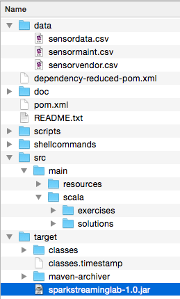
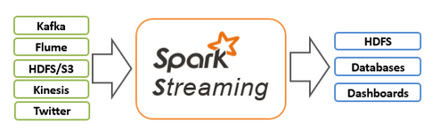
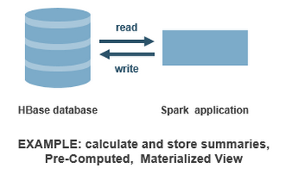
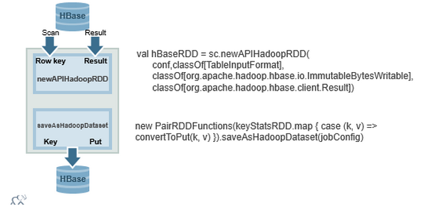

Discover Spark, Spark Streaming and HBase to create a Time Series Application
In this activity you will build and run a Spark Streaming application. Spark Streaming programs are best run as standalone applications built using Maven or sbt. First we will load and inspect the data using the spark shell , then we will use Spark Streaming from the shell. This will make it easier to understand how to finish the application code.
For this lab we will use MapR Hadoop Sandbox (Virtual Machine) or a MapR Cluster deployed on the cloud. The MapR cluster contains all the necessary components : Apache Spark and Apache HBase/MapR-DB.
spark-streaming-hbase-workshop.zip to your laptopspark-streaming-hbase-workshop.zip to your Sandbox/Cluster home directory
scp spark-streaming-hbase-workshop.zip [username]@node-ip:/user/[username]/.
spark-streaming-hbase-workshop.zip in your Sandbox/Cluster
unzip spark-streaming-hbase-workshop.zip ls /user/[username]/spark-streaming-hbase-workshop/dataYou should see the data files (sensordata.csv … ).
spark-streaming-hbase-workshop.zip on your laptop.
When you unzip the file spark-streaming-hbase-workshop.zip, it will create the following structure.

You can use your choice of Netbeans, Intellij, Eclipse, or just a text editor with Apache Maven on the command line. You need to install your IDE of choice on your laptop, or alternatively install maven on the sandbox and use the command line. If you use Netbeans or Intellij you only need to add the scala plugin, maven is included. If you use Eclipse, depending on the version, you may need to add the maven and scala plugins.
ssh –p port user01@ipaddress
/opt/mapr/spark/spark-[version]/bin/spark-shellor
spark-shell
shellcommands directory.// SQLContext entry point for working with structured data val sqlContext = new org.apache.spark.sql.SQLContext(sc) // this is used to implicitly convert an RDD to a DataFrame. import sqlContext.implicits._ // Import Spark SQL data types and Row. import org.apache.spark.sql._ import org.apache.spark.util.StatCounter
take(1) action returns the first element in the RDD.
// load the data into a new RDD, replace user01 with the proper path
val textRDD = sc.textFile("/user/user01/spark-streaming-hbase-workshop/data/sensordata.csv")
// Return the first element in this RDD
textRDD.take(1)
SensorparseSensor that parse each line and create an instance of Sensormap() transformation, that will be applied to each element of textRDD to create the RDD of sensor objects.
//define the schema using a case class
case class Sensor(
resid: String,
date: String,
time: String,
hz: Double,
disp: Double,
flo: Double,
sedPPM: Double,
psi: Double,
chlPPM: Double
)
// function to parse line of sensor data into Sensor class
def parseSensor(str: String): Sensor = {
val p = str.split(",")
Sensor(p(0), p(1), p(2), p(3).toDouble, p(4).toDouble, p(5).toDouble, p(6).toDouble, p(7).toDouble, p(8).toDouble)
}
// create an RDD of sensor objects
val sensorRDD= textRDD.map(parseSensor)
// The RDD first() action returns the first element in the RDD
sensorRDD.take(1)
Take a look to the 2 RDDs you have in your context textRDD and sensorRDD. You should see some differences (class, type, ...)
actions to get some values, or transformations to get new RDD.
// Return the number of elements in the RDD sensorRDD.count() // create an alert RDD for when psi is low val alertRDD = sensorRDD.filter(sensor => sensor.psi < 5.0) // print some results alertRDD.take(3).foreach(println)
// transform into an RDD of (key, values) to get daily stats for psi val keyValueRDD=sensorRDD.map(sensor => ((sensor.resid,sensor.date),sensor.psi)) // print out some data keyValueRDD.take(3).foreach(kv => println(kv)) // use StatCounter utility to get statistics for sensor psi val keyStatsRDD = keyValueRDD.groupByKey().mapValues(psi => StatCounter(psi)) // print out some data keyStatsRDD.take(5).foreach(println)
toDF().
toDF() method. The Sensor class will be use to define the DataFrame entries.
// change to a DataFrame val sensorDF = sensorRDD.toDF()
// group by the sensorid, date get average psi
sensorDF.groupBy("resid", "date").agg(avg(sensorDF("psi"))).take(5).foreach(println)
// register as a temp table then you can query
sensorDF.registerTempTable("sensor")
// get the max , min, avg for each column
val sensorStatDF = sqlContext.sql("SELECT resid, date,MAX(hz) as maxhz, min(hz) as minhz, avg(hz) as avghz, MAX(disp) as maxdisp, min(disp) as mindisp, avg(disp) as avgdisp, MAX(flo) as maxflo, min(flo) as minflo, avg(flo) as avgflo,MAX(sedPPM) as maxsedPPM, min(sedPPM) as minsedPPM, avg(sedPPM) as avgsedPPM, MAX(psi) as maxpsi, min(psi) as minpsi, avg(psi) as avgpsi,MAX(chlPPM) as maxchlPPM, min(chlPPM) as minchlPPM, avg(chlPPM) as avgchlPPM FROM sensor GROUP BY resid,date")
// print out the results
sensorStatDF.take(5).foreach(println)
sensorDF
sensorDF.select("psi").take(1)
resid - tips: apply distinct on select statement) For this example, the streaming API will use the File Streams, this means that the Spark application will capture automatically any new file as datasource.
Spark Streaming supports data sources such as Directories, HDFS directories, TCP sockets, Kafka, Flume, Twitter, etc. Data Streams can be processed with Spark’s core APIS, DataFrames SQL, or machine learning APIs, and can be persisted to a filesystem, HDFS, databases, or any data source offering a Hadoop OutputFormat.

Depending of your application you will chose the source. In this example we can imagine that the various sensor are pushing new files in a directory, and each time the application will capture it automatically.
mkdir stream
spark-shell --master local[2]
import org.apache.spark.SparkConf
import org.apache.spark.streaming.{Seconds, StreamingContext}
import StreamingContext._
case class Sensor(
resid: String,
date: String,
time: String,
hz: Double,
disp: Double,
flo: Double,
sedPPM: Double,
psi: Double,
chlPPM: Double
) extends Serializable
val ssc = new StreamingContext(sc, Seconds(2))
val linesDStream = ssc.textFileStream("/user/user01/stream")
linesDStream.print()
// for each RDD. performs function on each RDD in DStream
linesDStream.foreachRDD(rdd=>{
val sensorDStream = rdd.map(_.split(",")).map(
p => Sensor(
p(0),
p(1),
p(2),
p(3).toDouble,
p(4).toDouble,
p(5).toDouble,
p(6).toDouble,
p(7).toDouble,
p(8).toDouble)
)
sensorDStream.take(2).foreach(println)
})
// Start the computation ssc.start() // Wait for the computation to terminate ssc.awaitTermination()
ssh –p port user01@ipaddress
sensordata.csv file from the streaminglab/data directory to the stream directory (the directory that the streaming application will read from) at the linux command line type:
cp ~/spark-streaming-hbase-workshop/data/sensordata.csv stream/.
[userid]/stream folder and create a new RDD based on the Sensor class.
//TODO comments in the code.
SensorStream.main() method.
SparkConf. In the Spark Shell the SparkConf is created automatically.
val sparkConf = new SparkConf().setAppName("Stream")
// create a StreamingContext, the main entry point for all streaming functionality
val ssc = new StreamingContext(sparkConf, Seconds(2))
StreamingContext.textFileStream(directory) method to create an input stream that monitors a Hadoop-compatible file system for new files and processes any files created in that directory.
// create a DStream that represents streaming data from a directory source
val linesDStream = ssc.textFileStream("/user/user01/stream")
// parse each line of data in linesDStream into sensor objects val sensorDStream = linesDStream.map(parseSensor)
foreach
filter, as we have done in the first lab
// for each RDD. performs function on each RDD in DStream
sensorRDD.foreachRDD { rdd =>
// filter sensor data for low psi
val alertRDD = rdd.filter(sensor => sensor.psi < 5.0)
alertRDD.saveAsTextFile("/user/user01/alertout")
}
SensorStream class following the //TODO comments.
solutions package.
mvn clean packagescp sparkstreaminglab-1.0.jar user01@ipaddress:/user/user01/.
spark-submit command.spark-submit --driver-class-path `hbase classpath` --class package.class applicationjarname.jarNote that we are adding here the Hbase client to the class path using the Hbase command
hbase classpath
spark-submit --driver-class-path `hbase classpath` --class exercises.SensorStream sparkstreaminglab-1.0.jarNote: if you want to run the solution just use the class
solutions.SensorStream
cp sensordata.csv /user/user01/stream/new1.csv
rm stream/* , or give the file a new name when you copy it cp sensordata.csv /user/user01/stream/new2.csv .
http://ip-address:4040
exercises.HBaseSensorStream class following the //TODO comments in the code.
val cfDataBytes = Bytes.toBytes("data")
object Sensor {
. . .
// Convert a row of sensor object data to an HBase put object
def convertToPut(sensor: Sensor): (ImmutableBytesWritable, Put) = {
val dateTime = sensor.date + " " + sensor.time
// create a composite row key: sensorid_date time
val rowkey = sensor.resid + "_" + dateTime
val put = new Put(Bytes.toBytes(rowkey))
// add to column family data, column data values to put object
put.add(cfDataBytes, Bytes.toBytes("hz"), Bytes.toBytes(sensor.hz))
put.add(cfDataBytes, Bytes.toBytes("disp"), Bytes.toBytes(sensor.disp))
put.add(cfDataBytes, Bytes.toBytes("flo"), Bytes.toBytes(sensor.flo))
put.add(cfDataBytes, Bytes.toBytes("sedPPM"), Bytes.toBytes(sensor.sedPPM))
put.add(cfDataBytes, Bytes.toBytes("psi"), Bytes.toBytes(sensor.psi))
put.add(cfDataBytes, Bytes.toBytes("chlPPM"), Bytes.toBytes(sensor.chlPPM))
return (new ImmutableBytesWritable(Bytes.toBytes(rowkey)), put)
}
}
val tableName = "sensor" // set up Hadoop HBase configuration using TableOutputFormat val conf = HBaseConfiguration.create() conf.set(TableOutputFormat.OUTPUT_TABLE, tableName) val jobConfig: jobConfig = new JobConf(conf, this.getClass) jobConfig.setOutputFormat(classOf[TableOutputFormat]) jobConfig.set(TableOutputFormat.OUTPUT_TABLE, tableName)
// for each RDD. performs function on each RDD in DStream
sensorRDD.foreachRDD { rdd =>
// filter sensor data for low psi
val alertRDD = rdd.filter(sensor => sensor.psi < 5.0)
// convert sensor data to put object and write to HBase Table CF data
rdd.map(Sensor.convertToPut).saveAsHadoopDataset(jobConfig)
// convert alert to put object write to HBase Table CF alerts
rdd.map(Sensor.convertToPutAlert).saveAsHadoopDataset(jobConfig)
}
Take a look at the code in the solutions package. If you have time finish the HBaseSensorStream class code in the exercises package, or just run the code in the solutions package.
Before running your application you must create the HBase Table.
hbase shell
create '/user/user01/sensor', {NAME=>'data'}, {NAME=>'alert'}, {NAME=>'stats'}
rm stream/* .The Streaming receiver will only read new files copied after you start your application.
spark-submit --driver-class-path `hbase classpath` --class exercises.HBaseSensorStream sparkstreaminglab-1.0.jar
cp sensordata.csv /user/user01/stream/new2.csv
hbase shell
scan '/user/user01/sensor', {COLUMNS=>['data'], LIMIT => 10}
scan '/user/user01/sensor', {COLUMNS=>['alert'], LIMIT => 10 }
Your application now insert data into HBase: all metrics and some alerts for PSI.
Now we want to read the HBase sensor table data , calculate daily summary statistics and write these statistics to the stats column family.

The code below reads the HBase table sensor table psi column data, calculates statistics on this data using StatCounter, then writes the statistics to the sensor stats column family.
// configure HBase for reading
val conf = HBaseConfiguration.create()
conf.set(TableInputFormat.INPUT_TABLE, HBaseSensorStream.tableName)
// scan data column family psi column
conf.set(TableInputFormat.SCAN_COLUMNS, "data:psi")
// Load an RDD of (row key, row Result) tuples from the table
val hBaseRDD = sc.newAPIHadoopRDD(
conf,
classOf[TableInputFormat],
classOf[org.apache.hadoop.hbase.io.ImmutableBytesWritable],
classOf[org.apache.hadoop.hbase.client.Result]
)
// transform (row key, row Result) tuples into an RDD of Results
val resultRDD = hBaseRDD.map(tuple => tuple._2)
// transform into an RDD of (RowKey, ColumnValue)s , with Time removed from row key
val keyValueRDD = resultRDD.
map(result => (Bytes.toString(result.getRow()).
split(" ")(0), Bytes.toDouble(result.value)))
// group by rowkey , get statistics for column value
val keyStatsRDD = keyValueRDD.
groupByKey().
mapValues(list => StatCounter(list))
// convert rowkey, stats to put and write to hbase table stats column family
keyStatsRDD.map { case (k, v) => convertToPut(k, v) }.saveAsHadoopDataset(jobConfig)
The diagram below shows that the output from newAPIHadoopRDD is an RDD of row key, result pairs. The PairRDDFunctions saveAsHadoopDataset saves the Put objects to HBase.

Same as earlier, you have to build your project and deploy it on your cluster. Once done you can run the following commands:
spark-submit --driver-class-path `hbase classpath` --class exercises.HBaseReadWrite sparkstreaminglab-1.0.jar
spark-submit --driver-class-path `hbase classpath` --class exercises.HBaseReadRowWriteStats sparkstreaminglab-1.0.jar
scan '/user/user01/sensor', {COLUMNS=>['stats']}
This workshop is a simple introduction to Time Series application showing how to capture "sensor data", in this case coming from files, then save and process these data. If you want to learn more about Time Series you can look at the ebook
If you want learn more about Apache Spark, HBase, register for the free online training at http://learn.mapr.com, read the online Spark eBook